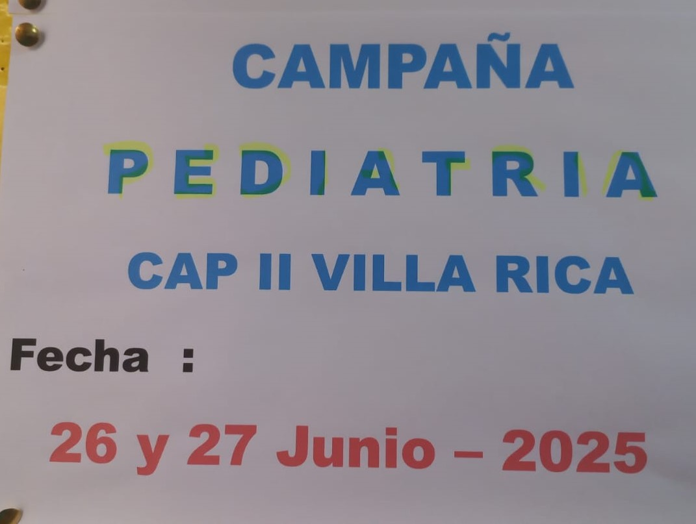
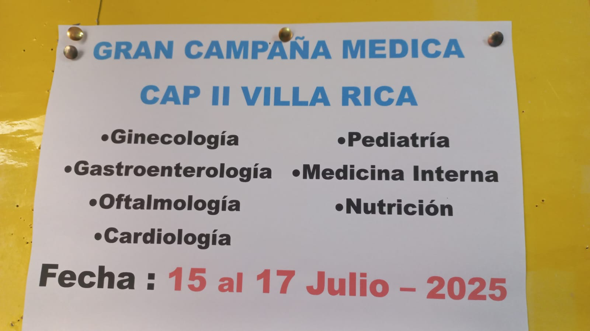
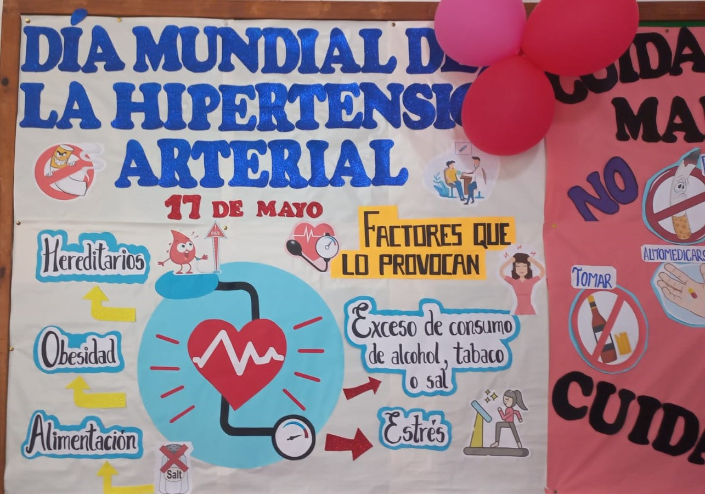
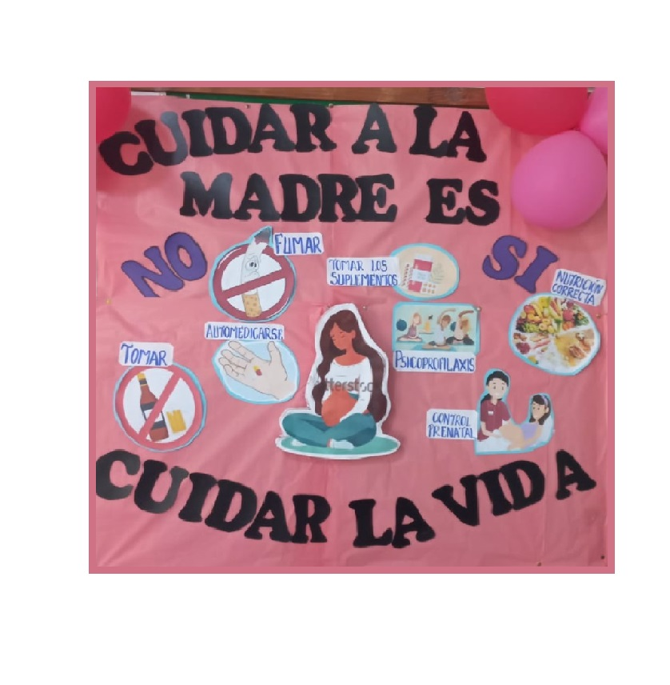
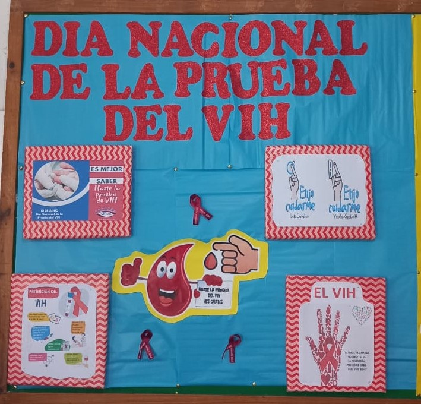

Promoción Especial
Campaña de Pediatría CAP II Villa Rica
"La salud de los niños, es la salud del futuro"
Del 26 - 27 de Junio 2025
No faltes

Campaña de Salud
Gran Campaña Médica CAP II Villa Rica
Ginecología, Pediatría, Gastroenterología, Medicina Interna, Oftalmología, Nutrición, Cardiología
Imágenes HD
Diagnóstico preciso
Conocer Más

Campaña de Salud
DIA DE LUCHA CONTRA LA HEPATITIS B
“VACÚNATE HOY MISMO!!"
20 DE JUNIO
Más Información

Campaña Médica
DIA MUNDIAL DE HIPERTENSION ARTERIAL
“CONTROLATE LA P/A AUN SIN MOLESTIAS”
17 DE Mayo
Ver Equipo Médico

Campaña Médica
DIA DE LA MATERNIDAD SALUDABLE Y SEGURA
“Cuidar a la madre, es cuidar la vida”
Del 19 al 23 de Mayo
Ver Equipo

Campaña Médica
DIA NACIONAL DE LA PRUEBA DE VIH
“HAZTE LA PRUEBA POR TI, POR MI”
10 DE JUNIO
Ver Equipo médico
Campaña Médica
DIA NACIONAL DE LA VACUNACION
“TU VACUNA, TU MEJOR ESCUDO”
29 de Mayo
Ver Equipo médico